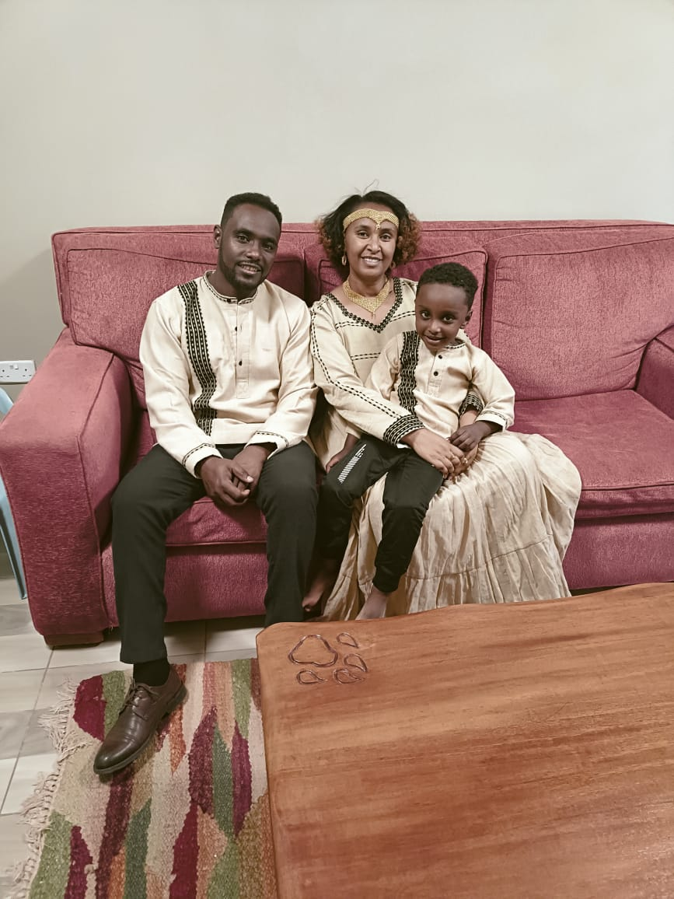
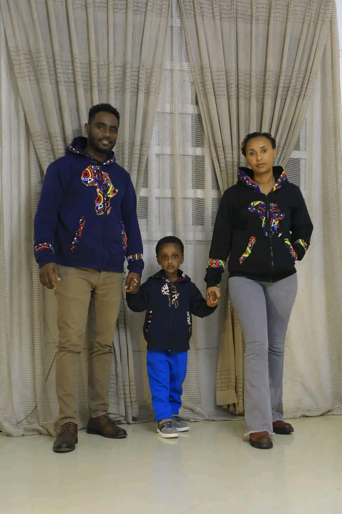

I am Rev. Dagaga Gemachu Regassa, born in 1988 in Ibantu, a rural village in East Wallaga region of Oromia, Ethiopia. Growing up in a farming family, I learned the values of hard work and the importance of community, even as we endured the challenges posed by the oppressive Derg regime, a socialist military junta that ruled Ethiopia from 1974 to 1987. This period was marked by severe persecution of Christians; churches were destroyed, and many believers were imprisoned or killed. The resilience and faith of my Christian parents during these trials shaped my own spiritual journey profoundly.
As a member of the Ethiopian Evangelical Church of Mekane Yesus, I embraced strong Christian values and the lesson of discipleship, guiding my deepening faith. I eventually became a youth leader in our church, marking the beginning of my dedication to God’s service.Supported by European missionaries, I moved to Addis Ababa for Bible studies at the certificate level, which broadened my horizons and deepened my faith. Encouraged to further my theological education, I moved to Nairobi in 2011, joining the Oromo Christian Fellowship Nairobi (OCFN). There, my leadership potential was recognized and nurtured. With fellowship support, I earned an Associate Degree from the International College of Bible Theology in 2014 and began serving as an evangelist with OCFN, focusing on the Oromo people for three years.
In October 2016, amid political turmoil, I felt a divine call to return to Ethiopia. This decision led me to lead the Biftu Bole Congregation of the Ethiopian Evangelical Church of Mekane Yesus as a leader and missionary department coordinator. From 2017 to October 2023, I played a crucial role in establishing over 100 churches, significantly advancing our church's mission across Ethiopia.
In 2019, I obtained a Master of World Mission from Leadstar Theological College, enhancing my missionary and leadership skills. That year, I also married Bruktawit Samuel, a dedicated health officer who left her job to join our missionary life, embracing significant sacrifices for our calling. We are blessed with a son, and together, we continue our service, guided by faith and commitment to spreading God’s word.
My life's journey underscores the power of faith and the strength from a life dedicated to service and the greater good.
 
1.Transform OCFN members into true disciples of Jesus through continuous discipleship and Bible study, preparing them to carry out God's work
.
2.Organize and expand our mission in North Kenya to effectively reach the Borena community with the Gospel.
To see the Borena Community transformed and liberated from Satan's bondage, living freely through Christ Jesus.